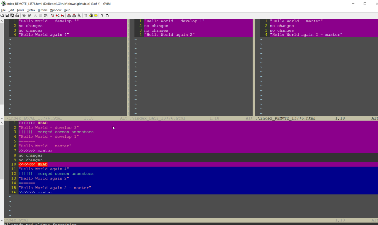

Git: Resolve Conflicts¶
Git provides various tools to resolve conflicts during the merge process, and in this blog we only discuss one of them gvimdiff in Windows Operating System.
Contents
Software installation¶
gvimdiff needs Gvim installed, which is GUI Vi text editor and can be downloaded from:
http://www.vim.org/download.php
After the installation, please ensure the executable file path is included in PATH environment variable. You can test it in console by typing gvim to see whether you get the application invoked.
Configure gvimdiff¶
In order to use gvimdiff, you need to configure it in git by following command
git config merge.tool gvimdiff
gvimdiff is using gvim but it is a internal name in git terminology, it means there will be no executable found in your file system. Do not get surprised if your console cannot find gvimdiff.
Use the following command to setup gvimdiff to have same diff view just like this post:
git config merge.conflictstyle diff3
If you are curious about other git merge options, you can check yourself:
git mergetool --tool-help
Make conflicts¶
Initialize a new repository with a dummy.txt file, put the following content in the file and commit it to master branch:
"Hello World"
no changes
no changes
"Hello World again"
Create develop branch by using following git command:
git branch develop
git checkout develop
Add the following modification in the first line and fourth line. And commit the change into develop branch.
"Hello World - develop"
no changes
no changes
"Hello World again - develop"
And switch back to master branch, and add following changes.
"Hello World - master"
no changes
no changes
"Hello World again 2 - master"
As you can see, we have created conflicts between master/develop. The next step will be to resolve them during the merge process.
Resolve conflicts¶
Now, let’s switch back to develop and try to merge all the changes from master.
git checkout develop
git merge master
Git will complain about conflicts, and you can see following error message in the console:
git merge master
Auto-merging dummy.txt
CONFLICT (content): Merge conflict in dummy.txt
Automatic merge failed; fix conflicts and then commit the result.
If you look into the current content of dummy.txt, you will find out it has been modified to contain the conflict data.
<<<<<<< HEAD
"Hello World - develop"
||||||| merged common ancestors
"Hello World - develop"
=======
"Hello World - master"
>>>>>>> master
no changes
no changes
<<<<<<< HEAD
"Hello World again"
||||||| merged common ancestors
"Hello World again"
=======
"Hello World again 2 - master"
>>>>>>> master
On theory, you can resolve the conflicts by ‘clean up’ the dummy.txt file directly to remove the git conflict syntax. I will not recommend that since it will be inefficient and error prone.
We can use gvimdiff utility to resolve the conflict by using following command:
git mergetool
And you will get the following gvim window
For using mergetool in git, we need to understand the following terminology to understand what is being merged:
- LOCAL - the head for the file(s) from the current branch on the machine that you are using.
- REMOTE - the head for files(s) from a remote location that you are trying to merge into your LOCAL branch.
- BASE - the common ancestor(s) of LOCAL and BASE.
- MERGED - the tag / HEAD object after the merge - this is saved as a new commit.
The above gvim window show as following style:
| LOCAL | BASE | REMOTE |
| MERGED |
gvimdiff commands¶
As you can see there are four sub-windows in the gvim, in order to switch between the sub-windows, you can use:
Ctrl w + h # move to the split on the left
Ctrl w + j # move to the split below
Ctrl w + k # move to the split on top
Ctrl w + l # move to the split on the right
Ctrl + tab # move to the next window
In order to go the previous/next difference, you can use:
] + C
[ + C
You can either incorporate the changes by manually editing the MERGED split, or use Vim shortcuts pull from one of the LOCAL, BASE ad REMOTE versions.
:diffg RE # get from REMOTE
:diffg BA # get from BASE
:diffg LO # get from LOCAL
save the changes then quit with :wqa to close all the splits. Remember to commit the merge.
git commit -am 'merged from several branches'
Written by Binwei@Oslo